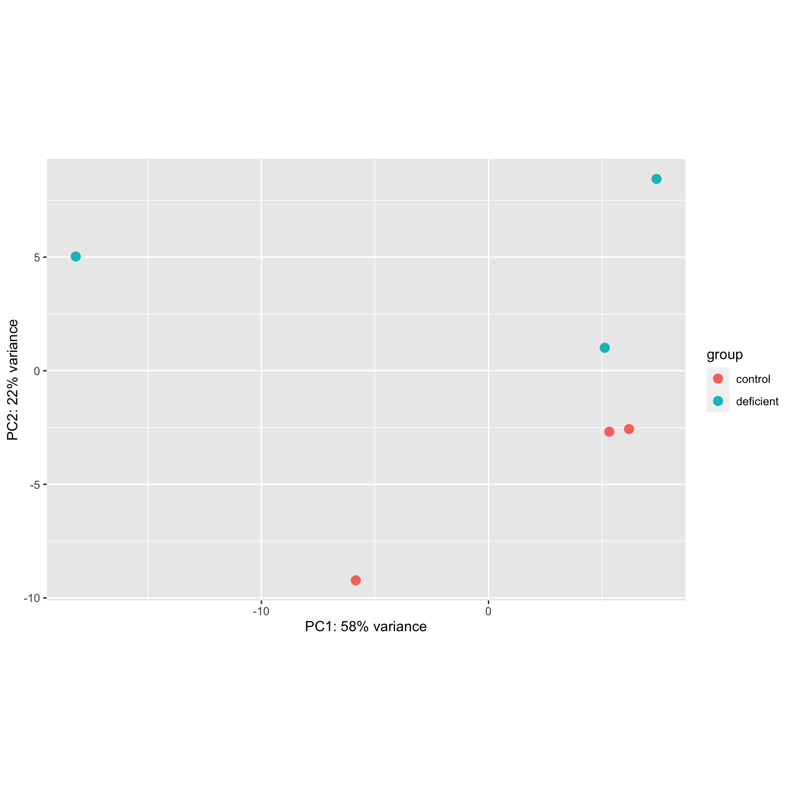

In this module, we will learn:
- How to identify possible “confounding” factors
- How batches or other covariates may impact your data
Differential Expression Workflow
Although we’ve successfully generated DE results, there are instances
where patterns in our PCA plots or additional discussions with our
collaborators cause us to revise our DE model(s).
In this case, we weren’t aware of any covariates
that should be considered in our comparisons based on the information
available publicly
for these data. However, let’s look back at our initial PCA plot and
see if there are any concerning patterns:
pca_plot = plotPCA(rld, intgroup = c('condition'), ntop = 500)
using ntop=500 top features by variance
pca_plot

We do see a high amount of variance (58%) along PC1 that doesn’t seem
to correspond to the experimental treatment. If we saw this pattern for
a “real” dataset, we’d request additional information about the
samples
How to model batch effects with DESeq2
Differences between samples can be due to biological
covariates such as sex or patient of origin.
Differences between samples can also be due to technical reasons, such
as collection on different days or different sequencing runs. Groups of
samples with different technical handling are called
batches and differences due to the handling of samples
are called batch effects.
Any relevant technical batches or biological covariates should be
added as additional
columns in the sample information table and added to a design
formula. We can include batch effects and covariates in the same way
in our design model, as long as the groups do not overlap, or
confound, the biological treatment groups.
Let’s assume that after reviewing the above PCA plot, we reached out
to our collaborators and they indicated that the samples were collected
on three different days. We can add that information to our samplesheet
and then create another DESeq2 object that includes those
labels and a model with an additional
term to account for possible batch effects due to date of
collection.
samplesheet_batch = samplesheet_ready
samplesheet_batch$batch = factor(c(rep(c("Day1", "Day2", "Day3"), 2)),
levels = c("Day1", "Day2", "Day3"))
dds_batch = DESeqDataSetFromMatrix(countData = count_table,
colData = samplesheet_batch,
design = ~ batch + condition)
Note that we first created a new column called “batch” and added date
of collection labels to our sample sheet and then initialized the
DESeq2 object with that sample information and a model that
includes an additional term that matches the “batch” column name.
While we don’t have time to delve into model options in detail, more
complex model designs including adding “interaction terms” between
multiple group labels, are helpfully described in this support thread
as well as in the DESeq2
vignette.
Click for example of model design check
When including multiple terms in our model it’s helpful to check the
corresponding design matrix to ensure that our batches are not
confounded, which would cause DESeq2 to return a
model not full rank error when attempting to fit the model.
We can do that using the model.matrix function, providing
our intended model and our sample information.
model.matrix(~ condition + batch, samplesheet_batch)
(Intercept) conditiondeficient batchDay2 batchDay3
sample_A 1 0 0 0
sample_B 1 0 1 0
sample_C 1 0 0 1
sample_D 1 1 0 0
sample_E 1 1 1 0
sample_F 1 1 0 1
attr(,"assign")
[1] 0 1 2 2
attr(,"contrasts")
attr(,"contrasts")$condition
[1] "contr.treatment"
attr(,"contrasts")$batch
[1] "contr.treatment"
When we look at the outputs, we can see that all of the returned columns
have values (1) included. If our model was not full rank,
then we would see a columns with no values (all 0)
returned.
Just like in our initial analysis, we’ll also want to filter our
data.
keep = rowSums(counts(dds_batch)) >= 10
dds_batch_filtered = dds_batch[keep,]
Now that we’ve initialized a DESeq2 object that includes
our batch labels and filtered the data, we can generate the
rlog normalized count data and have that meta-data
included:
rld_batch = rlog(dds_batch_filtered, blind = TRUE)
head(rld_batch)
class: DESeqTransform
dim: 6 6
metadata(1): version
assays(1): ''
rownames(6): ENSMUSG00000000001 ENSMUSG00000000028 ... ENSMUSG00000000049
ENSMUSG00000000056
rowData names(7): baseMean baseVar ... dispFit rlogIntercept
colnames(6): sample_A sample_B ... sample_E sample_F
colData names(4): genotype condition batch sizeFactor
Now that we have the additional labels added and normalized our data,
we can generate a new PCA plot to see if the the batches explain any of
the variance along PC1:
pca_plot_batch = plotPCA(rld_batch, intgroup = c('batch'), ntop = 500) + ggtitle("Batch labeled - iron deficiency data")
using ntop=500 top features by variance
pca_plot_batch
From this plot, we can see that the dates of collection are primarily
separated along PC1, suggesting that this variation might be batch
effects. For data with multiple technical or biological covariates, we
might need to generate PCA plots for each of the additional labels to
determine what labels might be relevant to that dataset. However, based
on the PCA plot for these data, we can proceed with fitting our model
and generating DE results that account for these batches.
Fit a model that includes a covariate
To fit our updated model, just like for our initial analysis, we use
the DESeq function:
dds_batch_fitted = DESeq(dds_batch_filtered)
resultsNames(dds_batch_fitted)
[1] "Intercept" "batch_Day2_vs_Day1"
[3] "batch_Day3_vs_Day1" "condition_deficient_vs_control"
Notice that we have two additional sets of results that include the
batch labels. While this indicates that the term we
included for batch was fit, these results would not be
biologically interesting.
Let’s look at these results from our comparison of interest:
resultsBatch_deficient_vs_control = results(dds_batch_fitted, name = 'condition_deficient_vs_control')
head(resultsBatch_deficient_vs_control) # results from model with term for batch
log2 fold change (MLE): condition deficient vs control
Wald test p-value: condition deficient vs control
DataFrame with 6 rows and 6 columns
baseMean log2FoldChange lfcSE stat pvalue padj
<numeric> <numeric> <numeric> <numeric> <numeric> <numeric>
ENSMUSG00000000001 1489.83039 0.274966 0.165703 1.659394 0.0970364 0.538526
ENSMUSG00000000028 1748.93544 0.217805 0.152329 1.429833 0.1527651 0.647029
ENSMUSG00000000031 2151.87715 0.138522 0.289999 0.477665 0.6328885 0.936072
ENSMUSG00000000037 24.91672 0.580793 0.709198 0.818944 0.4128186 NA
ENSMUSG00000000049 7.78377 -1.180919 1.360812 -0.867805 0.3855013 NA
ENSMUSG00000000056 19653.54030 -0.204334 0.180015 -1.135096 0.2563350 0.761406
head(results_deficient_vs_control) # results from model with no term
log2 fold change (MLE): condition deficient vs control
Wald test p-value: condition deficient vs control
DataFrame with 6 rows and 6 columns
baseMean log2FoldChange lfcSE stat pvalue padj
<numeric> <numeric> <numeric> <numeric> <numeric> <numeric>
ENSMUSG00000000001 1489.83039 0.297760 0.210310 1.415815 0.156830 0.868573
ENSMUSG00000000028 1748.93544 0.226421 0.176795 1.280695 0.200301 0.902900
ENSMUSG00000000031 2151.87715 0.457635 0.764579 0.598545 0.549476 0.995391
ENSMUSG00000000037 24.91672 0.579130 0.561259 1.031840 0.302147 0.950613
ENSMUSG00000000049 7.78377 -0.899483 1.553063 -0.579167 0.562476 0.998043
ENSMUSG00000000056 19653.54030 -0.174048 0.203529 -0.855151 0.392468 0.982479
We can see that while the structure of the results table is the same,
the returned statistics are slightly different. However, since we
didn’t actually talk to a collaborator to identify if batch
could explain the % of variance observed within our treatment groups,
we’ll save these results to file but will proceed with visualizing the
results of our initial model.
save(dds_batch_fitted,
file="outputs/Robjs/dds_batch_fitted.Robj")
Summary
In this section, we:
- Discussed technical batches and biological covariates
- Fitted a DESeq2 model that includes batch
- Generated tables of differential expression results for our batch
model - i.e. fold changes and adjusted pvalues for each gene in
dataset
- Saved our fitted model and results with batch to file
Now that we’ve generated multiple differential comparisons, we can
determine how many genes are differentially expressed between our
conditions and how to visualize our results.
Sources
These materials have been adapted and extended from materials listed
above. These are open access materials distributed under the terms of
the Creative
Commons Attribution license (CC BY 4.0), which permits unrestricted
use, distribution, and reproduction in any medium, provided the original
author and source are credited.
LS0tCnRpdGxlOiAiQ292YXJpYXRlcyBhbmQgQmF0Y2ggY29ycmVjdGlvbiIKYXV0aG9yOiAiVU0gQmlvaW5mb3JtYXRpY3MgQ29yZSIKZGF0ZTogImByIFN5cy5EYXRlKClgIgpvdXRwdXQ6CiAgICAgICAgaHRtbF9kb2N1bWVudDoKICAgICAgICAgICAgaW5jbHVkZXM6CiAgICAgICAgICAgICAgICBpbl9oZWFkZXI6IGhlYWRlci5odG1sCiAgICAgICAgICAgIHRoZW1lOiBwYXBlcgogICAgICAgICAgICB0b2M6IHRydWUKICAgICAgICAgICAgdG9jX2RlcHRoOiA0CiAgICAgICAgICAgIHRvY19mbG9hdDogdHJ1ZQogICAgICAgICAgICBudW1iZXJfc2VjdGlvbnM6IGZhbHNlCiAgICAgICAgICAgIGZpZ19jYXB0aW9uOiB0cnVlCiAgICAgICAgICAgIG1hcmtkb3duOiBHRk0KICAgICAgICAgICAgY29kZV9kb3dubG9hZDogdHJ1ZQotLS0KCjxzdHlsZSB0eXBlPSJ0ZXh0L2NzcyI+CmJvZHksIHRkIHsKICAgZm9udC1zaXplOiAxOHB4Owp9CmNvZGUucnsKICBmb250LXNpemU6IDEycHg7Cn0KcHJlIHsKICBmb250LXNpemU6IDEycHgKfQo8L3N0eWxlPgoKYGBge3IsIGluY2x1ZGUgPSBGQUxTRX0Kc291cmNlKCIuLi9iaW4vY2h1bmstb3B0aW9ucy5SIikKa25pdHJfZmlnX3BhdGgoIjEwYS0iKQpgYGAKCjxIYXZlIHNlY3Rpb24gZm9sbG93IHRoZSBmaXR0aW5nIGEgREUgb2Ygc3RhbmRhcmQgbW9kZWw+CgpJbiB0aGlzIG1vZHVsZSwgd2Ugd2lsbCBsZWFybjoKCiogSG93IHRvIGlkZW50aWZ5IHBvc3NpYmxlICJjb25mb3VuZGluZyIgZmFjdG9ycwoqIEhvdyBiYXRjaGVzIG9yIG90aGVyIGNvdmFyaWF0ZXMgbWF5IGltcGFjdCB5b3VyIGRhdGEKCjxicj4KCmBgYHtyIE1vZHVsZXMsIGV2YWw9VFJVRSwgZWNobz1GQUxTRSwgbWVzc2FnZT1GQUxTRSwgd2FybmluZz1GQUxTRX0KbGlicmFyeShERVNlcTIpCmxpYnJhcnkodGlkeXIpCmxpYnJhcnkoZHBseXIpCiMgbG9hZCgicmRhdGEvUnVubmluZ0RhdGEuUkRhdGEiKQpgYGAKCgojIERpZmZlcmVudGlhbCBFeHByZXNzaW9uIFdvcmtmbG93IHsudW5saXN0ZWQgLnVubnVtYmVyZWR9CgpBbHRob3VnaCB3ZSd2ZSBzdWNjZXNzZnVsbHkgZ2VuZXJhdGVkIERFIHJlc3VsdHMsIHRoZXJlIGFyZSBpbnN0YW5jZXMgd2hlcmUgcGF0dGVybnMgaW4gb3VyIFBDQSBwbG90cyBvciBhZGRpdGlvbmFsIGRpc2N1c3Npb25zIHdpdGggb3VyIGNvbGxhYm9yYXRvcnMgY2F1c2UgdXMgdG8gcmV2aXNlIG91ciBERSBtb2RlbChzKS4KCiFbXSguL2ltYWdlcy93YXlmaW5kZXIvd2F5ZmluZGVyLWJhdGNoQW5kQ292YXJzLnBuZyl7d2lkdGg9NzUlfQoKSW4gdGhpcyBjYXNlLCB3ZSB3ZXJlbid0IGF3YXJlIG9mIGFueSBbY292YXJpYXRlc10oaHR0cHM6Ly9tZXRob2RzLXNhZ2VwdWItY29tLnByb3h5LmxpYi51bWljaC5lZHUvcmVmZXJlbmNlL2VuY3ljLW9mLXJlc2VhcmNoLWRlc2lnbi9uODUueG1sKSB0aGF0IHNob3VsZCBiZSBjb25zaWRlcmVkIGluIG91ciBjb21wYXJpc29ucyBiYXNlZCBvbiB0aGUgW2luZm9ybWF0aW9uIGF2YWlsYWJsZV0oaHR0cHM6Ly93d3cubmNiaS5ubG0ubmloLmdvdi9UcmFjZXMvc3R1ZHkvP2FjYz1QUkpOQTQ4ODk1NSZvPWFjY19zJTNBYSkgW3B1YmxpY2x5IGZvciB0aGVzZSBkYXRhXShodHRwczovL3d3dy5uY2JpLm5sbS5uaWguZ292L2dlby9xdWVyeS9hY2MuY2dpP2FjYz1HU0UxMTkzNjUpLiBIb3dldmVyLCBsZXQncyBsb29rIGJhY2sgYXQgb3VyIGluaXRpYWwgUENBIHBsb3QgYW5kIHNlZSBpZiB0aGVyZSBhcmUgYW55IGNvbmNlcm5pbmcgcGF0dGVybnM6CgpgYGB7ciBQQ0FybG9nM30KcGNhX3Bsb3QgPSBwbG90UENBKHJsZCwgaW50Z3JvdXAgPSBjKCdjb25kaXRpb24nKSwgbnRvcCA9IDUwMCkKcGNhX3Bsb3QKYGBgCgpXZSBkbyBzZWUgYSBoaWdoIGFtb3VudCBvZiB2YXJpYW5jZSAoNTglKSBhbG9uZyBQQzEgdGhhdCBkb2Vzbid0IHNlZW0gdG8gY29ycmVzcG9uZCB0byB0aGUgZXhwZXJpbWVudGFsIHRyZWF0bWVudC4gSWYgd2Ugc2F3IHRoaXMgcGF0dGVybiBmb3IgYSAicmVhbCIgZGF0YXNldCwgd2UnZCByZXF1ZXN0IGFkZGl0aW9uYWwgaW5mb3JtYXRpb24gYWJvdXQgdGhlIHNhbXBsZXMgCgojIEhvdyB0byBtb2RlbCBiYXRjaCBlZmZlY3RzIHdpdGggREVTZXEyCgpEaWZmZXJlbmNlcyBiZXR3ZWVuIHNhbXBsZXMgY2FuIGJlIGR1ZSB0byBiaW9sb2dpY2FsICoqY292YXJpYXRlcyoqIHN1Y2ggYXMgc2V4IG9yIHBhdGllbnQgb2Ygb3JpZ2luLiBEaWZmZXJlbmNlcyBiZXR3ZWVuIHNhbXBsZXMgY2FuIGFsc28gYmUgZHVlIHRvIHRlY2huaWNhbCByZWFzb25zLCBzdWNoIGFzIGNvbGxlY3Rpb24gb24gZGlmZmVyZW50IGRheXMgb3IgZGlmZmVyZW50IHNlcXVlbmNpbmcgcnVucy4gR3JvdXBzIG9mIHNhbXBsZXMgd2l0aCBkaWZmZXJlbnQgdGVjaG5pY2FsIGhhbmRsaW5nIGFyZSBjYWxsZWQgKipiYXRjaGVzKiogYW5kIGRpZmZlcmVuY2VzIGR1ZSB0byB0aGUgaGFuZGxpbmcgb2Ygc2FtcGxlcyBhcmUgY2FsbGVkICoqYmF0Y2ggZWZmZWN0cyoqLiAKCkFueSByZWxldmFudCB0ZWNobmljYWwgYmF0Y2hlcyBvciBiaW9sb2dpY2FsIGNvdmFyaWF0ZXMgc2hvdWxkIGJlIGFkZGVkIGFzIFthZGRpdGlvbmFsIGNvbHVtbnNdKGh0dHBzOi8vc3VwcG9ydC5iaW9jb25kdWN0b3Iub3JnL3AvNzUzMDkvKSBpbiB0aGUgc2FtcGxlIGluZm9ybWF0aW9uIHRhYmxlIGFuZCBbYWRkZWQgdG8gYSBkZXNpZ24gZm9ybXVsYV0oaHR0cHM6Ly9zdXBwb3J0LmJpb2NvbmR1Y3Rvci5vcmcvcC85ODcwMC8pLiBXZSBjYW4gaW5jbHVkZSBiYXRjaCBlZmZlY3RzIGFuZCBjb3ZhcmlhdGVzIGluIHRoZSBzYW1lIHdheSBpbiBvdXIgZGVzaWduIG1vZGVsLCBhcyBsb25nIGFzIHRoZSBncm91cHMgZG8gbm90IG92ZXJsYXAsIG9yICoqY29uZm91bmQqKiwgdGhlIGJpb2xvZ2ljYWwgdHJlYXRtZW50IGdyb3Vwcy4KCkxldCdzIGFzc3VtZSB0aGF0IGFmdGVyIHJldmlld2luZyB0aGUgYWJvdmUgUENBIHBsb3QsIHdlIHJlYWNoZWQgb3V0IHRvIG91ciBjb2xsYWJvcmF0b3JzIGFuZCB0aGV5IGluZGljYXRlZCB0aGF0IHRoZSBzYW1wbGVzIHdlcmUgY29sbGVjdGVkIG9uIHRocmVlIGRpZmZlcmVudCBkYXlzLiBXZSBjYW4gYWRkIHRoYXQgaW5mb3JtYXRpb24gdG8gb3VyIHNhbXBsZXNoZWV0IGFuZCB0aGVuIGNyZWF0ZSBhbm90aGVyIGBERVNlcTJgIG9iamVjdCB0aGF0IGluY2x1ZGVzIHRob3NlIGxhYmVscyBhbmQgYSBtb2RlbCB3aXRoIGFuIFthZGRpdGlvbmFsIHRlcm1dKGh0dHBzOi8vYmlvY29uZHVjdG9yLm9yZy9wYWNrYWdlcy9kZXZlbC9iaW9jL3ZpZ25ldHRlcy9ERVNlcTIvaW5zdC9kb2MvREVTZXEyLmh0bWwjbXVsdGktZmFjdG9yLWRlc2lnbnMpIHRvIGFjY291bnQgZm9yIHBvc3NpYmxlIGJhdGNoIGVmZmVjdHMgZHVlIHRvIGRhdGUgb2YgY29sbGVjdGlvbi4KCmBgYHtyIENvbmZvdW5kZXJzfQpzYW1wbGVzaGVldF9iYXRjaCA9IHNhbXBsZXNoZWV0X3JlYWR5CnNhbXBsZXNoZWV0X2JhdGNoJGJhdGNoID0gZmFjdG9yKGMocmVwKGMoIkRheTEiLCAiRGF5MiIsICJEYXkzIiksIDIpKSwgCiAgICAgICAgICAgICAgICAgICAgICAgICAgICAgICAgIGxldmVscyA9IGMoIkRheTEiLCAiRGF5MiIsICJEYXkzIikpCgpkZHNfYmF0Y2ggPSBERVNlcURhdGFTZXRGcm9tTWF0cml4KGNvdW50RGF0YSA9IGNvdW50X3RhYmxlLAogICAgICAgICAgICAgICAgICAgICAgY29sRGF0YSA9IHNhbXBsZXNoZWV0X2JhdGNoLAogICAgICAgICAgICAgICAgICAgICAgZGVzaWduID0gfiBiYXRjaCArIGNvbmRpdGlvbikKYGBgCgpOb3RlIHRoYXQgd2UgZmlyc3QgY3JlYXRlZCBhIG5ldyBjb2x1bW4gY2FsbGVkICJiYXRjaCIgYW5kIGFkZGVkIGRhdGUgb2YgY29sbGVjdGlvbiBsYWJlbHMgdG8gb3VyIHNhbXBsZSBzaGVldCBhbmQgdGhlbiBpbml0aWFsaXplZCB0aGUgYERFU2VxMmAgb2JqZWN0IHdpdGggdGhhdCBzYW1wbGUgaW5mb3JtYXRpb24gYW5kIGEgbW9kZWwgdGhhdCBpbmNsdWRlcyBhbiBhZGRpdGlvbmFsIHRlcm0gdGhhdCBtYXRjaGVzIHRoZSAiYmF0Y2giIGNvbHVtbiBuYW1lLgoKV2hpbGUgd2UgZG9uJ3QgaGF2ZSB0aW1lIHRvIGRlbHZlIGludG8gbW9kZWwgb3B0aW9ucyBpbiBkZXRhaWwsIG1vcmUgY29tcGxleCBtb2RlbCBkZXNpZ25zIGluY2x1ZGluZyBhZGRpbmcgImludGVyYWN0aW9uIHRlcm1zIiBiZXR3ZWVuIG11bHRpcGxlIGdyb3VwIGxhYmVscywgYXJlIGhlbHBmdWxseSBkZXNjcmliZWQgaW4gW3RoaXMgc3VwcG9ydCB0aHJlYWRdKGh0dHBzOi8vc3VwcG9ydC5iaW9jb25kdWN0b3Iub3JnL3AvOTg2MjgvKSBhcyB3ZWxsIGFzIGluIHRoZSBbREVTZXEyIHZpZ25ldHRlXShodHRwczovL2Jpb2NvbmR1Y3Rvci5vcmcvcGFja2FnZXMvcmVsZWFzZS9iaW9jL3ZpZ25ldHRlcy9ERVNlcTIvaW5zdC9kb2MvREVTZXEyLmh0bWwjaW50ZXJhY3Rpb25zKS4KCjxkZXRhaWxzPgogICAgPHN1bW1hcnk+KkNsaWNrIGZvciBleGFtcGxlIG9mIG1vZGVsIGRlc2lnbiBjaGVjayo8L3N1bW1hcnk+CiAgICBXaGVuIGluY2x1ZGluZyBtdWx0aXBsZSB0ZXJtcyBpbiBvdXIgbW9kZWwgaXQncyBoZWxwZnVsIHRvIGNoZWNrIHRoZSBjb3JyZXNwb25kaW5nIGRlc2lnbiBtYXRyaXggdG8gZW5zdXJlIHRoYXQgb3VyIGJhdGNoZXMgYXJlIG5vdCBjb25mb3VuZGVkLCB3aGljaCB3b3VsZCBjYXVzZSBgREVTZXEyYCB0byByZXR1cm4gYSBgbW9kZWwgbm90IGZ1bGwgcmFua2AgZXJyb3Igd2hlbiBhdHRlbXB0aW5nIHRvIGZpdCB0aGUgbW9kZWwuIFdlIGNhbiBkbyB0aGF0IHVzaW5nIHRoZSBgbW9kZWwubWF0cml4YCBmdW5jdGlvbiwgcHJvdmlkaW5nIG91ciBpbnRlbmRlZCBtb2RlbCBhbmQgb3VyIHNhbXBsZSBpbmZvcm1hdGlvbi4gCgpgYGB7ciBUZXN0SW50ZXJhY3Rpb25zfQptb2RlbC5tYXRyaXgofiBjb25kaXRpb24gKyBiYXRjaCwgc2FtcGxlc2hlZXRfYmF0Y2gpCmBgYAogIFdoZW4gd2UgbG9vayBhdCB0aGUgb3V0cHV0cywgd2UgY2FuIHNlZSB0aGF0IGFsbCBvZiB0aGUgcmV0dXJuZWQgY29sdW1ucyBoYXZlIHZhbHVlcyAoYDFgKSBpbmNsdWRlZC4gSWYgb3VyIG1vZGVsIHdhcyBub3QgZnVsbCByYW5rLCB0aGVuIHdlIHdvdWxkIHNlZSBhIGNvbHVtbnMgd2l0aCBubyB2YWx1ZXMgKGFsbCBgMGApIHJldHVybmVkLgo8L2RldGFpbHM+Cjxicj4KCkp1c3QgbGlrZSBpbiBvdXIgaW5pdGlhbCBhbmFseXNpcywgd2UnbGwgYWxzbyB3YW50IHRvIGZpbHRlciBvdXIgZGF0YS4KYGBge3IgRmlsdGVyRGF0YX0Ka2VlcCA9IHJvd1N1bXMoY291bnRzKGRkc19iYXRjaCkpID49IDEwCmRkc19iYXRjaF9maWx0ZXJlZCA9IGRkc19iYXRjaFtrZWVwLF0KYGBgCgpOb3cgdGhhdCB3ZSd2ZSBpbml0aWFsaXplZCBhIGBERVNlcTJgIG9iamVjdCB0aGF0IGluY2x1ZGVzIG91ciBiYXRjaCBsYWJlbHMgYW5kIGZpbHRlcmVkIHRoZSBkYXRhLCB3ZSBjYW4gZ2VuZXJhdGUgdGhlIGBybG9nYCBub3JtYWxpemVkIGNvdW50IGRhdGEgYW5kIGhhdmUgdGhhdCBtZXRhLWRhdGEgaW5jbHVkZWQ6CgpgYGB7ciBCYXRjaE5vcm1hbGl6YXRpb259CnJsZF9iYXRjaCA9IHJsb2coZGRzX2JhdGNoX2ZpbHRlcmVkLCBibGluZCA9IFRSVUUpCmhlYWQocmxkX2JhdGNoKQpgYGAKCk5vdyB0aGF0IHdlIGhhdmUgdGhlIGFkZGl0aW9uYWwgbGFiZWxzIGFkZGVkIGFuZCBub3JtYWxpemVkIG91ciBkYXRhLCB3ZSBjYW4gZ2VuZXJhdGUgYSBuZXcgUENBIHBsb3QgdG8gc2VlIGlmIHRoZSB0aGUgYmF0Y2hlcyBleHBsYWluIGFueSBvZiB0aGUgdmFyaWFuY2UgYWxvbmcgUEMxOgoKYGBge3IgQmF0Y2hQQ0F9CnBjYV9wbG90X2JhdGNoID0gcGxvdFBDQShybGRfYmF0Y2gsIGludGdyb3VwID0gYygnYmF0Y2gnKSwgbnRvcCA9IDUwMCkgKyBnZ3RpdGxlKCJCYXRjaCBsYWJlbGVkIC0gaXJvbiBkZWZpY2llbmN5IGRhdGEiKQpwY2FfcGxvdF9iYXRjaApgYGAKCkZyb20gdGhpcyBwbG90LCB3ZSBjYW4gc2VlIHRoYXQgdGhlIGRhdGVzIG9mIGNvbGxlY3Rpb24gYXJlIHByaW1hcmlseSBzZXBhcmF0ZWQgYWxvbmcgUEMxLCBzdWdnZXN0aW5nIHRoYXQgdGhpcyB2YXJpYXRpb24gbWlnaHQgYmUgYmF0Y2ggZWZmZWN0cy4gRm9yIGRhdGEgd2l0aCBtdWx0aXBsZSB0ZWNobmljYWwgb3IgYmlvbG9naWNhbCBjb3ZhcmlhdGVzLCB3ZSBtaWdodCBuZWVkIHRvIGdlbmVyYXRlIFBDQSBwbG90cyBmb3IgZWFjaCBvZiB0aGUgYWRkaXRpb25hbCBsYWJlbHMgdG8gZGV0ZXJtaW5lIHdoYXQgbGFiZWxzIG1pZ2h0IGJlIHJlbGV2YW50IHRvIHRoYXQgZGF0YXNldC4gSG93ZXZlciwgYmFzZWQgb24gdGhlIFBDQSBwbG90IGZvciB0aGVzZSBkYXRhLCB3ZSBjYW4gcHJvY2VlZCB3aXRoIGZpdHRpbmcgb3VyIG1vZGVsIGFuZCBnZW5lcmF0aW5nIERFIHJlc3VsdHMgdGhhdCBhY2NvdW50IGZvciB0aGVzZSBiYXRjaGVzLgoKIyBGaXQgYSBtb2RlbCB0aGF0IGluY2x1ZGVzIGEgY292YXJpYXRlIAoKVG8gZml0IG91ciB1cGRhdGVkIG1vZGVsLCBqdXN0IGxpa2UgZm9yIG91ciBpbml0aWFsIGFuYWx5c2lzLCB3ZSB1c2UgdGhlIGBERVNlcWAgZnVuY3Rpb246CgpgYGB7ciBGaXRNb2RlbENvdmFyaWF0ZSwgbWVzc2FnZT1GQUxTRX0KZGRzX2JhdGNoX2ZpdHRlZCA9IERFU2VxKGRkc19iYXRjaF9maWx0ZXJlZCkKcmVzdWx0c05hbWVzKGRkc19iYXRjaF9maXR0ZWQpIApgYGAKTm90aWNlIHRoYXQgd2UgaGF2ZSB0d28gYWRkaXRpb25hbCBzZXRzIG9mIHJlc3VsdHMgdGhhdCBpbmNsdWRlIHRoZSBgYmF0Y2hgIGxhYmVscy4gV2hpbGUgdGhpcyBpbmRpY2F0ZXMgdGhhdCB0aGUgdGVybSB3ZSBpbmNsdWRlZCBmb3IgYGJhdGNoYCB3YXMgZml0LCB0aGVzZSByZXN1bHRzIHdvdWxkIG5vdCBiZSBiaW9sb2dpY2FsbHkgaW50ZXJlc3RpbmcuCgpMZXQncyBsb29rIGF0IHRoZXNlIHJlc3VsdHMgZnJvbSBvdXIgY29tcGFyaXNvbiBvZiBpbnRlcmVzdDoKYGBge3Igc2V0QmF0Y2hSZXN1bHRzfQpyZXN1bHRzQmF0Y2hfZGVmaWNpZW50X3ZzX2NvbnRyb2wgPSByZXN1bHRzKGRkc19iYXRjaF9maXR0ZWQsIG5hbWUgPSAnY29uZGl0aW9uX2RlZmljaWVudF92c19jb250cm9sJykKaGVhZChyZXN1bHRzQmF0Y2hfZGVmaWNpZW50X3ZzX2NvbnRyb2wpICMgcmVzdWx0cyBmcm9tIG1vZGVsIHdpdGggdGVybSBmb3IgYmF0Y2gKaGVhZChyZXN1bHRzX2RlZmljaWVudF92c19jb250cm9sKSAjIHJlc3VsdHMgZnJvbSBtb2RlbCB3aXRoIG5vIHRlcm0KYGBgCldlIGNhbiBzZWUgdGhhdCB3aGlsZSB0aGUgc3RydWN0dXJlIG9mIHRoZSByZXN1bHRzIHRhYmxlIGlzIHRoZSBzYW1lLCB0aGUgcmV0dXJuZWQgc3RhdGlzdGljcyBhcmUgc2xpZ2h0bHkgZGlmZmVyZW50LiBIb3dldmVyLCBzaW5jZSB3ZSAqZGlkbid0KiBhY3R1YWxseSB0YWxrIHRvIGEgY29sbGFib3JhdG9yIHRvIGlkZW50aWZ5IGlmIGJhdGNoIGNvdWxkIGV4cGxhaW4gdGhlICUgb2YgdmFyaWFuY2Ugb2JzZXJ2ZWQgd2l0aGluIG91ciB0cmVhdG1lbnQgZ3JvdXBzLCB3ZSdsbCBzYXZlIHRoZXNlIHJlc3VsdHMgdG8gZmlsZSBidXQgd2lsbCBwcm9jZWVkIHdpdGggdmlzdWFsaXppbmcgdGhlIHJlc3VsdHMgb2Ygb3VyIGluaXRpYWwgbW9kZWwuCgpgYGB7ciBXcml0ZUZpdE1vZGVsT2JqZWN0fQpzYXZlKGRkc19iYXRjaF9maXR0ZWQsCiAgICAgICAgICBmaWxlPSJvdXRwdXRzL1JvYmpzL2Rkc19iYXRjaF9maXR0ZWQuUm9iaiIpCmBgYAoKCgotLS0KCiMgU3VtbWFyeQoKSW4gdGhpcyBzZWN0aW9uLCB3ZToKCiogRGlzY3Vzc2VkIHRlY2huaWNhbCBiYXRjaGVzIGFuZCBiaW9sb2dpY2FsIGNvdmFyaWF0ZXMKKiBGaXR0ZWQgYSBERVNlcTIgbW9kZWwgdGhhdCBpbmNsdWRlcyBiYXRjaAoqIEdlbmVyYXRlZCB0YWJsZXMgb2YgZGlmZmVyZW50aWFsIGV4cHJlc3Npb24gcmVzdWx0cyBmb3Igb3VyIGJhdGNoIG1vZGVsIC0gaS5lLiBmb2xkIGNoYW5nZXMgYW5kIGFkanVzdGVkIHB2YWx1ZXMgZm9yIGVhY2ggZ2VuZSBpbiBkYXRhc2V0CiogU2F2ZWQgb3VyIGZpdHRlZCBtb2RlbCBhbmQgcmVzdWx0cyB3aXRoIGJhdGNoIHRvIGZpbGUKCk5vdyB0aGF0IHdlJ3ZlIGdlbmVyYXRlZCBtdWx0aXBsZSBkaWZmZXJlbnRpYWwgY29tcGFyaXNvbnMsIHdlIGNhbiBkZXRlcm1pbmUgaG93IG1hbnkgZ2VuZXMgYXJlIGRpZmZlcmVudGlhbGx5IGV4cHJlc3NlZCBiZXR3ZWVuIG91ciBjb25kaXRpb25zIGFuZCBob3cgdG8gdmlzdWFsaXplIG91ciByZXN1bHRzLgoKLS0tCgoKLS0tCgojIFNvdXJjZXMKCiogSEJDIERHRSB0cmFpbmluZyBtb2R1bGUsIHBhcnQgMTogaHR0cHM6Ly9oYmN0cmFpbmluZy5naXRodWIuaW8vREdFX3dvcmtzaG9wL2xlc3NvbnMvMDRfREdFX0RFU2VxMl9hbmFseXNpcy5odG1sCiogaHR0cHM6Ly9iaW9ocGMuY29ybmVsbC5lZHUvZG9jL1JOQS1TZXEtMjAyMC1leGVyY2lzZTIuaHRtbAoKLS0tCgpUaGVzZSBtYXRlcmlhbHMgaGF2ZSBiZWVuIGFkYXB0ZWQgYW5kIGV4dGVuZGVkIGZyb20gbWF0ZXJpYWxzIGxpc3RlZCBhYm92ZS4gVGhlc2UgYXJlIG9wZW4gYWNjZXNzIG1hdGVyaWFscyBkaXN0cmlidXRlZCB1bmRlciB0aGUgdGVybXMgb2YgdGhlIFtDcmVhdGl2ZSBDb21tb25zIEF0dHJpYnV0aW9uIGxpY2Vuc2UgKENDIEJZIDQuMCldKGh0dHA6Ly9jcmVhdGl2ZWNvbW1vbnMub3JnL2xpY2Vuc2VzL2J5LzQuMC8pLCB3aGljaCBwZXJtaXRzIHVucmVzdHJpY3RlZCB1c2UsIGRpc3RyaWJ1dGlvbiwgYW5kIHJlcHJvZHVjdGlvbiBpbiBhbnkgbWVkaXVtLCBwcm92aWRlZCB0aGUgb3JpZ2luYWwgYXV0aG9yIGFuZCBzb3VyY2UgYXJlIGNyZWRpdGVkLgoKPGJyLz4KPGJyLz4KPGhyLz4KfCBbUHJldmlvdXMgbGVzc29uXShNb2R1bGUwOV9TYW1wbGVRQ1Zpei5odG1sKSB8IFtUb3Agb2YgdGhpcyBsZXNzb25dKCN0b3ApIHwgW05leHQgbGVzc29uXShNb2R1bGUxMV9ERVZpc3VhbGl6YXRpb25zLmh0bWwpIHwKfCA6LS0tIHwgOi0tLS06IHwgLS0tOiB8Cgo=